#{{<video https://youtu.be/playlist?list=PLQqh36zP38-wD7Am2wZ7NNZjHpt55gwEH&si=Yj3LYi8Y9uU5SYtp >}}04wk-2: 깊은신경망 (3) – 오버피팅, 드랍아웃, 신경망의 표현

1. 강의영상
2. Imports
import torch
import matplotlib.pyplot as plt3. 오버피팅 (시벤코정리의 이면)
A. 오버피팅
- 오버피팅이란?
- 위키: In mathematical modeling, overfitting is “the production of an analysis that corresponds too closely or exactly to a particular set of data, and may therefore fail to fit to additional data or predict future observations reliably”.
- 제 개념: 데이터를 “데이터 = 언더라잉 + 오차”라고 생각할때 우리가 데이터로부터 적합할 것은 언더라잉인데 오차항을 적합하고 있는 현상.
B. 오버피팅 예시
- \(m\)이 매우 클때 아래의 네트워크 거의 무엇이든 맞출 수 있다고 보면 된다.
- \(\underset{(n,1)}{\bf X} \overset{l_1}{\to} \underset{(n,m)}{\boldsymbol u^{(1)}} \overset{h}{\to} \underset{(n,m)}{\boldsymbol v^{(1)}} \overset{l_2}{\to} \underset{(n,1)}{\hat{\boldsymbol y}}\)
- \(\underset{(n,1)}{\bf X} \overset{l_1}{\to} \underset{(n,m)}{\boldsymbol u^{(1)}} \overset{sig}{\to} \underset{(n,m)}{\boldsymbol v^{(1)}} \overset{l_2}{\to} \underset{(n,1)}{\hat{\boldsymbol y}}\)
- \(\underset{(n,1)}{\bf X} \overset{l_1}{\to} \underset{(n,m)}{\boldsymbol u^{(1)}} \overset{relu}{\to} \underset{(n,m)}{\boldsymbol v^{(1)}} \overset{l_2}{\to} \underset{(n,1)}{\hat{\boldsymbol y}}\)
- 그런데 종종 맞추지 말아야 할 것들도 맞춘다.
model: \(y_i = (0\times x_i) + \epsilon_i\), where \(\epsilon_i \sim N(0,0.01^2)\)
torch.manual_seed(5)
x = torch.linspace(0,1,100).reshape(100,1)
y = torch.randn(100).reshape(100,1)*0.01
plt.plot(x,y,'--o',alpha=0.5)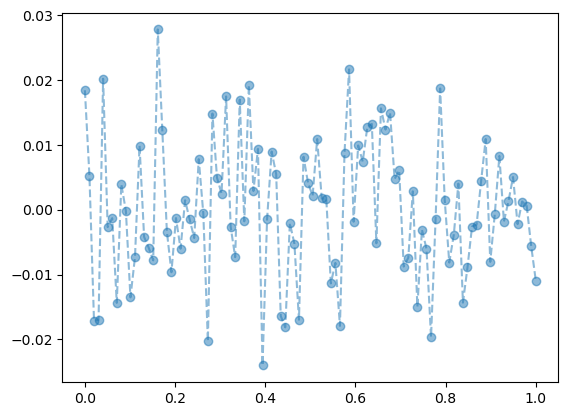
- y는 그냥 정규분포에서 생성한 오차이므로 \(X \to y\) 로 향하는 규칙따위는 없음
torch.manual_seed(1)
net=torch.nn.Sequential(
torch.nn.Linear(in_features=1,out_features=512),
torch.nn.ReLU(),
torch.nn.Linear(in_features=512,out_features=1))
optimizr= torch.optim.Adam(net.parameters())
loss_fn= torch.nn.MSELoss()
for epoc in range(1000):
## 1
yhat=net(x)
## 2
loss=loss_fn(yhat,y)
## 3
loss.backward()
## 4
optimizr.step()
net.zero_grad() plt.plot(x,y,'--o',alpha=0.5)
plt.plot(x,net(x).data,'--')
- 우리는 데이터를 랜덤에서 뽑았는데, 데이터의 추세를 따라간다 \(\to\) 오버피팅 (underlying이 아니라 오차항을 따라가고 있음)
C. 오버피팅이라는 뚜렷한 증거! (train / test)
- 데이터의 분리하여 보자.
torch.manual_seed(5)
x_all = torch.linspace(0,1,100).reshape(100,1)
y_all = torch.randn(100).reshape(100,1)*0.01
x = x_all[:80]
y = y_all[:80]
xx = x_all[80:]
yy = y_all[80:]
plt.plot(x,y,'--o',label="training (open)",alpha=0.7)
plt.plot(xx,yy,'--o',label="test (hidden)",alpha=0.3)
plt.legend()
- train만 학습
torch.manual_seed(1)
net=torch.nn.Sequential(
torch.nn.Linear(in_features=1,out_features=512),
torch.nn.ReLU(),
torch.nn.Linear(in_features=512,out_features=1))
optimizr= torch.optim.Adam(net.parameters())
loss_fn= torch.nn.MSELoss()
for epoc in range(1000):
## 1
yhat = net(x)
## 2
loss=loss_fn(yhat,y)
## 3
loss.backward()
## 4
optimizr.step()
optimizr.zero_grad() - training data로 학습한 net를 training data 에 적용
plt.plot(x,y,'--o',label="training data (open)",alpha=0.3)
plt.plot(xx,yy,'--o',label="test data (hidden)",alpha=0.3)
plt.plot(x,net(x).data,label="fitted values, predicted values",color="C0")
plt.legend()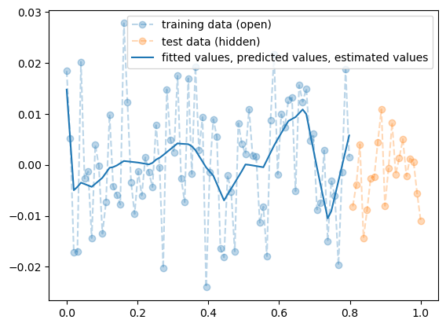
- train에서는 잘 맞추는듯이 보인다.
- training data로 학습한 net를 test data 에 적용
plt.plot(x,y,'--o',label="training data (open)",alpha=0.3)
plt.plot(xx,yy,'--o',label="test data (hidden)",alpha=0.3)
plt.plot(x,net(x).data,label="fitted values, predicted values",color="C0")
plt.plot(xx,net(xx).data,label="predicted values, predicted values with new data",color="C1")
plt.legend()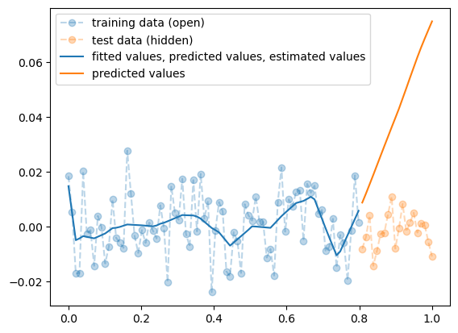
- train은 그럭저럭 따라가지만 test에서는 엉망이다. \(\to\) overfit
D. 시벤코정리의 올바른 이해
시벤코정리의 항변(?) (Cybenko 1989)
하나의 은닉층을 가지는 아래와 같은 꼴의 네트워크 \(net: {\bf X}_{n \times p} \to {\bf y}_{n\times q}\)는
net = torch.nn.Sequential(
torch.nn.Linear(p,???),
torch.nn.Sigmoid(), ## <-- 여기에 렐루를 써도 된다.
torch.nn.Linear(???,q)
)모든 continuous mapping
\[f: {\bf X}_{n \times p} \to {\bf y}_{n\times q}\]
를 원하는 정확도로 “근사”시킬 수 있다 (즉 마음만 먹으면 loss를 0에 가깝도록 만들 수 있다는 의다) 쉽게 말하면 \({\bf X} \to {\bf y}\) 인 어떠한 복잡한 규칙라도 하나의 은닉층을 가진 심층신경망(DNN)이 원하는 정확도로 근사시킨다는 의미이다. 그렇지만 이러한 규칙이 네크워크가 학습하지 못했던 자료 (처음 보는 자료, unseen data) \({\bf XX}_{m \times p}\), \({\bf yy}_{m \times p}\) 에 대하여서도 올바르게 적용된다라는 보장은 없다. 즉
\[{\bf X}_{n \times p} \to {\bf y}_{n\times q}\]
를 원하는 정확도로 근사시킨 네트워크라고 할지라도
\[{\bf XX}_{m \times p} \to {\bf yy}_{m\times q}\]
는 엉터리로 나올 수 있다. 시벤코는 넓은 신경망이 가지는 표현력의 한계를 수학적으로 밝혔을 뿐이다. 넓은 신경망이 우수한 신경망1이라는 주장을 한적은 없다.
1 여기에서 우수하다는 말은 여러의미가 있어요, 오버피팅이 없는 신경망이라든가, 경제적인 신경망이라든가..
Cybenko, George. 1989. “Approximation by Superpositions of a Sigmoidal Function.” Mathematics of Control, Signals and Systems 2 (4): 303–14.
4. 드랍아웃
A. 오버피팅의 해결
- 오버피팅의 해결책: 드랍아웃
- 학습
torch.manual_seed(1)
net = torch.nn.Sequential(
torch.nn.Linear(in_features=1,out_features=512),
torch.nn.ReLU(),
torch.nn.Dropout(0.8),
torch.nn.Linear(in_features=512,out_features=1)
)
loss_fn = torch.nn.MSELoss()
optimizr = torch.optim.Adam(net.parameters())
for epoc in range(1000):
## 1
yhat = net(x)
## 2
loss = loss_fn(net(x),y)
## 3
loss.backward()
## 4
optimizr.step()
optimizr.zero_grad()- 결과시각화 (잘못된 사용)
plt.plot(x,y,'o')
plt.plot(xx,yy,'o')
plt.plot(x,net(x).data,'--k')
plt.title(r"network is in training mode",fontsize=15)Text(0.5, 1.0, 'network is in training mode')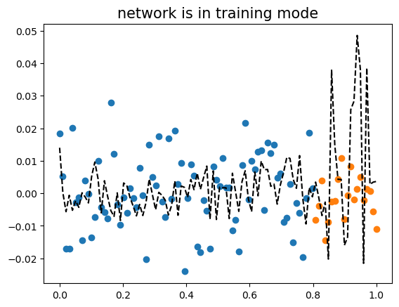
- 결과시각화 (올바른 사용)
net.trainingTruenet.eval()
net.trainingFalseplt.plot(x,y,'o')
plt.plot(xx,yy,'o')
plt.plot(x,net(x).data,'--k')
plt.title(r"network is in evaluation mode",fontsize=15)Text(0.5, 1.0, 'network is in evaluation mode')
B. 드랍아웃 레이어
_x = torch.linspace(0,1,101)
_x tensor([0.0000, 0.0100, 0.0200, 0.0300, 0.0400, 0.0500, 0.0600, 0.0700, 0.0800,
0.0900, 0.1000, 0.1100, 0.1200, 0.1300, 0.1400, 0.1500, 0.1600, 0.1700,
0.1800, 0.1900, 0.2000, 0.2100, 0.2200, 0.2300, 0.2400, 0.2500, 0.2600,
0.2700, 0.2800, 0.2900, 0.3000, 0.3100, 0.3200, 0.3300, 0.3400, 0.3500,
0.3600, 0.3700, 0.3800, 0.3900, 0.4000, 0.4100, 0.4200, 0.4300, 0.4400,
0.4500, 0.4600, 0.4700, 0.4800, 0.4900, 0.5000, 0.5100, 0.5200, 0.5300,
0.5400, 0.5500, 0.5600, 0.5700, 0.5800, 0.5900, 0.6000, 0.6100, 0.6200,
0.6300, 0.6400, 0.6500, 0.6600, 0.6700, 0.6800, 0.6900, 0.7000, 0.7100,
0.7200, 0.7300, 0.7400, 0.7500, 0.7600, 0.7700, 0.7800, 0.7900, 0.8000,
0.8100, 0.8200, 0.8300, 0.8400, 0.8500, 0.8600, 0.8700, 0.8800, 0.8900,
0.9000, 0.9100, 0.9200, 0.9300, 0.9400, 0.9500, 0.9600, 0.9700, 0.9800,
0.9900, 1.0000])dout = torch.nn.Dropout(0.9)
dout(_x)tensor([0.0000, 0.1000, 0.0000, 0.0000, 0.0000, 0.5000, 0.0000, 0.0000, 0.0000,
0.0000, 0.0000, 0.0000, 0.0000, 0.0000, 0.0000, 0.0000, 0.0000, 0.0000,
0.0000, 0.0000, 2.0000, 2.1000, 0.0000, 0.0000, 0.0000, 0.0000, 0.0000,
2.7000, 0.0000, 0.0000, 0.0000, 0.0000, 0.0000, 0.0000, 0.0000, 0.0000,
0.0000, 0.0000, 0.0000, 0.0000, 0.0000, 4.1000, 0.0000, 4.3000, 4.4000,
0.0000, 0.0000, 0.0000, 0.0000, 0.0000, 0.0000, 0.0000, 0.0000, 0.0000,
0.0000, 0.0000, 0.0000, 0.0000, 0.0000, 0.0000, 0.0000, 0.0000, 0.0000,
0.0000, 0.0000, 6.5000, 0.0000, 0.0000, 0.0000, 0.0000, 0.0000, 0.0000,
0.0000, 0.0000, 0.0000, 0.0000, 0.0000, 0.0000, 7.8000, 0.0000, 0.0000,
0.0000, 0.0000, 0.0000, 8.4000, 0.0000, 0.0000, 0.0000, 0.0000, 8.9000,
0.0000, 0.0000, 0.0000, 0.0000, 0.0000, 0.0000, 0.0000, 0.0000, 0.0000,
9.9000, 0.0000])- 90%의 드랍아웃: 드랍아웃층의 입력 중 임의로 90%를 골라서 결과를 0으로 만든다. + 그리고 0이 되지않고 살아남은 값들은 10배 만큼 값이 커진다.
- 드랍아웃레이어 정리
- 구조: 입력 -> 드랍아웃레이어 -> 출력
- 역할: (1) 입력의 일부를 임의로 0으로 만드는 역할 (2) 0이 안된것들은 스칼라배하여 드랍아웃을 통과한 모든 숫자들의 총합이 일정하게 되도록 조정
- 효과: 오버피팅을 억제하는 효과가 있음 (왜??)
- 의미: each iteration (each epoch x) 마다 학습에 참여하는 노드가 랜덤으로 결정됨.
- 느낌: 모든 노드가 골고루 학습가능 + 한 두개의 특화된 능력치가 개발되기 보다 평균적인 능력치가 전반적으로 개선됨
오버피팅을 잡는 방법은 드랍아웃만 있는게 아니다..
5. 신경망의 표현 (\({\boldsymbol x} \to \hat{\boldsymbol y}\) 로 가는 과정을 그림으로 표현)
예제1: \(\underset{(n,1)}{\bf X} \overset{l_1}{\to} \underset{(n,1)}{\boldsymbol u^{(1)}} \overset{sig}{\to} \underset{(n,1)}{\boldsymbol v^{(1)}} =\underset{(n,1)}{\hat{\boldsymbol y}}\)
- 모든 observation과 가중치를 명시한 버전
(표현1)
Code
gv('''
"1" -> "ŵ₀ + xₙ*ŵ₁, bias=False"[label="* ŵ₀"]
"xₙ" -> "ŵ₀ + xₙ*ŵ₁, bias=False"[label="* ŵ₁"]
"ŵ₀ + xₙ*ŵ₁, bias=False" -> "ŷₙ"[label="sigmoid"]
"." -> "...................................."[label="* ŵ₀"]
".." -> "...................................."[label="* ŵ₁"]
"...................................." -> "..."[label=" "]
"1 " -> "ŵ₀ + x₂*ŵ₁, bias=False"[label="* ŵ₀"]
"x₂" -> "ŵ₀ + x₂*ŵ₁, bias=False"[label="* ŵ₁"]
"ŵ₀ + x₂*ŵ₁, bias=False" -> "ŷ₂"[label="sigmoid"]
"1 " -> "ŵ₀ + x₁*ŵ₁, bias=False"[label="* ŵ₀"]
"x₁" -> "ŵ₀ + x₁*ŵ₁, bias=False"[label="* ŵ₁"]
"ŵ₀ + x₁*ŵ₁, bias=False" -> "ŷ₁"[label="sigmoid"]
''')
- 단점: 똑같은 그림의 반복이 너무 많음
- observation 반복을 생략한 버전들
(표현2) 모든 \(i\)에 대하여 아래의 그림을 반복한다고 하면 (표현1)과 같다.
Code
gv('''
"1" -> "ŵ₀ + xᵢ*ŵ₁, bias=False"[label="* ŵ₀"]
"xᵢ" -> "ŵ₀ + xᵢ*ŵ₁, bias=False"[label="* ŵ₁"]
"ŵ₀ + xᵢ*ŵ₁, bias=False" -> "ŷᵢ"[label="sigmoid"]
''')
(표현3) 그런데 (표현2)에서 아래와 같이 \(x_i\), \(y_i\) 대신에 간단히 \(x\), \(y\)로 쓰는 경우도 많음
Code
gv('''
"1" -> "ŵ₀ + x*ŵ₁, bias=False"[label="* ŵ₀"]
"x" -> "ŵ₀ + x*ŵ₁, bias=False"[label="* ŵ₁"]
"ŵ₀ + x*ŵ₁, bias=False" -> "ŷ"[label="sigmoid"]
''')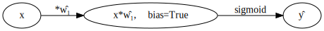
- 1을 생략한 버전들
(표현4) bais=False 대신에 bias=True를 주면 1을 생략할 수 있음
Code
gv('''
"x" -> "x*ŵ₁, bias=True"[label="*ŵ₁"] ;
"x*ŵ₁, bias=True" -> "ŷ"[label="sigmoid"] ''')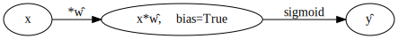
(표현4의 수정) \(\hat{w}_1\)대신에 \(\hat{w}\)를 쓰는 것이 더 자연스러움
Code
gv('''
"x" -> "x*ŵ, bias=True"[label="*ŵ"] ;
"x*ŵ, bias=True" -> "ŷ"[label="sigmoid"] ''')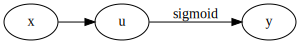
(표현5) 선형변환의 결과는 아래와 같이 \(u\)로 표현하기도 한다.
Code
gv('''
"x" -> "u";
"u" -> "y"[label="sigmoid"] ''')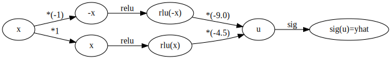
다이어그램은 그리는 사람의 취향에 따라 그리는 방법이 조금씩 다릅니다. 즉 교재마다 달라요.
예제2: \(\underset{(n,1)}{\bf X} \overset{l_1}{\to} \underset{(n,2)}{\boldsymbol u^{(1)}} \overset{relu}{\to} \underset{(n,2)}{\boldsymbol v^{(1)}} \overset{l_2}{\to} \underset{(n,1)}{\boldsymbol u^{(2)}} \overset{sig}{\to} \underset{(n,1)}{\boldsymbol v^{(2)}} =\underset{(n,1)}{\hat{\boldsymbol y}}\)
참고: 코드로 표현
torch.nn.Sequential(
torch.nn.Linear(in_features=1,out_features=2),
torch.nn.ReLU(),
torch.nn.Linear(in_features=2,out_features=1),
torch.nn.Sigmoid()
)- 이해를 위해서 03kw-2에서 다루었던 아래의 상황을 고려하자.

(강의노트의 표현)
Code
gv('''
"x" -> " -x"[label="*(-1)"];
"x" -> " x"[label="*1"]
" x" -> "rlu(x)"[label="relu"]
" -x" -> "rlu(-x)"[label="relu"]
"rlu(x)" -> "u"[label="*(-4.5)"]
"rlu(-x)" -> "u"[label="*(-9.0)"]
"u" -> "sig(u)=yhat"[label="sig"]
'''
)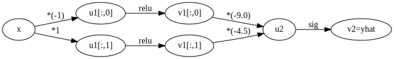
(좀 더 일반화된 표현) 10월4일 강의노트 상황을 일반화하면 아래와 같다.
Code
gv('''
"x" -> "u1[:,0]"[label="*(-1)"];
"x" -> "u1[:,1]"[label="*1"]
"u1[:,0]" -> "v1[:,0]"[label="relu"]
"u1[:,1]" -> "v1[:,1]"[label="relu"]
"v1[:,0]" -> "u2"[label="*(-9.0)"]
"v1[:,1]" -> "u2"[label="*(-4.5)"]
"u2" -> "v2=yhat"[label="sig"]
'''
)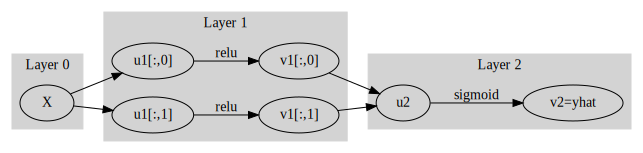
* Layer의 개념: \({\bf X}\)에서 \(\hat{\boldsymbol y}\)로 가는 과정은 “선형변환+비선형변환”이 반복되는 구조이다. “선형변환+비선형변환”을 하나의 세트로 보면 아래와 같이 표현할 수 있다.
\(\underset{(n,1)}{\bf X} \overset{l_1}{\to} \left( \underset{(n,2)}{\boldsymbol u^{(1)}} \overset{relu}{\to} \underset{(n,2)}{\boldsymbol v^{(1)}} \right) \overset{l_2}{\to} \left(\underset{(n,1)}{\boldsymbol u^{(2)}} \overset{sig}{\to} \underset{(n,1)}{\boldsymbol v^{(2)}}\right), \quad \underset{(n,1)}{\boldsymbol v^{(2)}}=\underset{(n,1)}{net({\bf X})}=\underset{(n,1)}{\hat{\boldsymbol y}}\)
이것을 다이어그램으로 표현한다면 아래와 같다.
(선형+비선형을 하나의 Layer로 묶은 표현)
Code
gv('''
subgraph cluster_1{
style=filled;
color=lightgrey;
"X"
label = "Layer 0"
}
subgraph cluster_2{
style=filled;
color=lightgrey;
"X" -> "u1[:,0]"
"X" -> "u1[:,1]"
"u1[:,0]" -> "v1[:,0]"[label="relu"]
"u1[:,1]" -> "v1[:,1]"[label="relu"]
label = "Layer 1"
}
subgraph cluster_3{
style=filled;
color=lightgrey;
"v1[:,0]" -> "u2"
"v1[:,1]" -> "u2"
"u2" -> "v2=yhat"[label="sigmoid"]
label = "Layer 2"
}
''')
Layer를 세는 방법
- 정석: 학습가능한 파라메터가 몇층으로 있는지…
- 일부 교재 설명: 입력층은 계산하지 않음, activation layer는 계산하지 않음.
- 위의 예제의 경우
number of layer = 2이다.
사실 input layer, activation layer 등의 표현을 자주 사용해서 layer를 세는 방법이 처음에는 헷갈립니다..
위키에는 이 경우
number of layer = 3으로 정의합니다. https://en.wikipedia.org/wiki/Multilayer_perceptron#Layers
Hidden Layer의 수를 세는 방법
Layer의 수 = Hidden Layer의 수 + 출력층의 수 = Hidden Layer의 수 + 1- 위의 예제의 경우
number of hidden layer = 1이다.
* node의 개념: \(u\to v\)로 가는 쌍을 간단히 노드라는 개념을 이용하여 나타낼 수 있음.
(노드의 개념이 포함된 그림)
Code
gv('''
subgraph cluster_1{
style=filled;
color=lightgrey;
"X"
label = "Layer 0"
}
subgraph cluster_2{
style=filled;
color=lightgrey;
"X" -> "node1"
"X" -> "node2"
label = "Layer 1:relu"
}
subgraph cluster_3{
style=filled;
color=lightgrey;
"node1" -> "yhat "
"node2" -> "yhat "
label = "Layer 2:sigmoid"
}
''')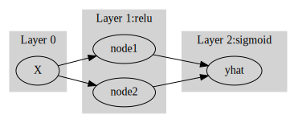
여기에서 node의 숫자 = feature의 숫자와 같이 이해할 수 있다. 즉 아래와 같이 이해할 수 있다.
(“number of nodes = number of features”로 이해한 그림)
Code
gv('''
subgraph cluster_1{
style=filled;
color=lightgrey;
"X"
label = "Layer 0"
}
subgraph cluster_2{
style=filled;
color=lightgrey;
"X" -> "feature1"
"X" -> "feature2"
label = "Layer 1:relu"
}
subgraph cluster_3{
style=filled;
color=lightgrey;
"feature1" -> "yhat "
"feature2" -> "yhat "
label = "Layer 2:sigmoid"
}
''')
다이어그램의 표현방식은 교재마다 달라서 모든 예시를 달달 외울 필요는 없습니다. 다만 임의의 다이어그램을 보고 대응하는 네트워크를 pytorch로 구현하는 능력은 매우 중요합니다.
예제3: \(\underset{(n,784)}{\bf X} \overset{l_1}{\to} \underset{(n,32)}{\boldsymbol u^{(1)}} \overset{relu}{\to} \underset{(n,32)}{\boldsymbol v^{(1)}} \overset{l_1}{\to} \underset{(n,1)}{\boldsymbol u^{(2)}} \overset{sig}{\to} \underset{(n,1)}{\boldsymbol v^{(2)}}=\underset{(n,1)}{\hat{\boldsymbol y}}\)
(다이어그램표현)
Code
gv('''
splines=line
subgraph cluster_1{
style=filled;
color=lightgrey;
"x1"
"x2"
".."
"x784"
label = "Input Layer"
}
subgraph cluster_2{
style=filled;
color=lightgrey;
"x1" -> "node1"
"x2" -> "node1"
".." -> "node1"
"x784" -> "node1"
"x1" -> "node2"
"x2" -> "node2"
".." -> "node2"
"x784" -> "node2"
"x1" -> "..."
"x2" -> "..."
".." -> "..."
"x784" -> "..."
"x1" -> "node32"
"x2" -> "node32"
".." -> "node32"
"x784" -> "node32"
label = "Hidden Layer: relu"
}
subgraph cluster_3{
style=filled;
color=lightgrey;
"node1" -> "yhat"
"node2" -> "yhat"
"..." -> "yhat"
"node32" -> "yhat"
label = "Outplut Layer: sigmoid"
}
''')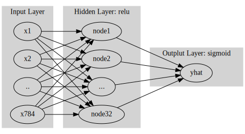
- Layer0,1,2 대신에 Input Layer, Hidden Layer, Output Layer로 표현함
- 위의 다이어그램에 대응하는 코드
net = torch.nn.Sequential(
torch.nn.Linear(in_features=28*28*1,out_features=32),
torch.nn.ReLU(),
torch.nn.Linear(in_features=32,out_features=1),
torch.nn.Sigmoid()
)A1. 자잘한 용어 정리 (\(\star\))
A. 지도학습
- 우리가 수업에서 다루는 데이터는 주로 아래와 같은 느낌이다.
데이터는 \((X,y)\)의 형태로 정리되어 있다.
\(y\)는 우리가 관심이 있는 변수이다. 즉 우리는 \(y\)를 적절하게 추정하는 것에 관심이 있다.
\(X\)는 \(y\)를 추정하기 위해 필요한 정보이다.
| \(X\) = 설명변수 = 독립변수 | \(y\) = 반응변수 = 종속변수 | 비고 | 순서 | 예시 |
|---|---|---|---|---|
| 이미지 | 카테고리 | 합성곱신경망 | 상관없음 | 개/고양이 이미지 구분 |
| 유저,아이템 | 평점 | 추천시스템 | 상관없음 | 넷플릭스 영화추천 |
| 과거~오늘까지의주가 | 내일주가 | 순환신경망 | 순서상관있음 | 주가예측 |
| 처음 \(m\)개의 단어(혹은 문장) | 이후 1개의 단어(혹은 문장) | 순환신경망 | 순서상관있음 | 챗봇, 텍스트생성 |
| 처음 \(m\)개의 단어(혹은 문장) | 카테고리 | 순환신경망 | 순서상관있음 | 영화리뷰 텍스트 감정분류 |
- 이러한 문제상황, 즉 \((X,y)\)가 주어졌을때 \(X \to y\)를 추정하는 문제를 supervised learning 이라한다.
B. DNN, ANN, MLP
- DNN 은 깊은 신경망, ANN 은 인공신경망, MLP 는 다층퍼셉트론이라 번역된다.
- 아래의 네트워크는 ANN이라 볼 수 있다. 하지만 MLP, DNN 이라 볼 수는 없다.
net = torch.nn.Sequential(
torch.nn.Linear(in_features=1,out_features=1),
torch.nn.Sigmoid()
)- 아래의 네트워크는 ANN이라 볼 수 있다. 또한 레이어가 2개 있으므로 MLP라고 볼 수 있다. DNN 이라 보기는 애매하다. (그래서 이걸 얕은신경망(shallow network)이라고 표현하기도 합니다)
net = torch.nn.Sequential(
torch.nn.Linear(in_features=1,out_features=2),
torch.nn.ReLU(),
torch.nn.Linear(in_features=2,out_features=1),
torch.nn.Sigmoid()
)- 아래의 네트워크는 ANN이라 볼 수 있다. 또한 레이어가 7개 있으므로 MLP라고 볼 수 있다. 이 정도면 깊어보이니까 DNN 이라 주장할 수 있어보인다.
net = torch.nn.Sequential(
torch.nn.Linear(in_features=1,out_features=2),
torch.nn.ReLU(),
torch.nn.Linear(in_features=2,out_features=2),
torch.nn.ReLU(),
torch.nn.Linear(in_features=2,out_features=2),
torch.nn.ReLU(),
torch.nn.Linear(in_features=2,out_features=2),
torch.nn.ReLU(),
torch.nn.Linear(in_features=2,out_features=2),
torch.nn.ReLU(),
torch.nn.Linear(in_features=2,out_features=2),
torch.nn.ReLU(),
torch.nn.Linear(in_features=2,out_features=1),
torch.nn.Sigmoid(),
)- 아래의 네트워크는 ANN이라 볼 수 있다. 또한 레이어가 3개 있으므로 MLP라고 볼 수 있다. 이건 DNN이라고 봐야하나? 깊다기 보다는 넓은 신경망인데…
net = torch.nn.Sequential(
torch.nn.Linear(in_features=1,out_features=1048576),
torch.nn.ReLU(),
torch.nn.Linear(in_features=1048576,out_features=1048576),
torch.nn.ReLU(),
torch.nn.Linear(in_features=1048576,out_features=1),
torch.nn.Sigmoid(),
)- 야매개념: 요즘은 거의 ANN \(\approx\) MLP \(\approx\) DNN 의 느낌으로 쓴다.
- 어지간한 모형은 다 ANN이라 우길 수 있다. 회귀분석도, 로지스틱분석도 마음먹으면 ANN으로 우길 수 있다. 그래서 ANN을 썼다라는건 뭘 썼는지 모르겟다는 말이랑 같다. 이런 이유로 사람들은 거의 MLP를 쓴 경우에 ANN을 썼다고 하고, 회귀모형을 쓴 경우에는 굳이 ANN을 썼다고 표현하지 않는다.
- MLP과 DNN은 구분이 모호하다. 하나이상의 은닉층만 포함하고 있으면 MLP라고 부를 수 있다. 적은 노드수를 유지하면서 은닉층을 여러개 쓰면 깊은신경망이라고 하고, 많은 노드를 사용하면서 은닉층을 얇게, 그리고 노드를 많이 쓰면 넓은신경망이라고 한다. 얼마나 깊을때 DNN으로 부를지 명확한 합의가 되어있지 않다. (3층-MLP부터 DNN으로 부르는 방식이 지지를 얻는듯. 그렇지만 4층-MLP 부터 DNN으로 부르는 사람도 존재함.)
- 이러한 이유로 거의 ANN, MLP, DNN은 비슷한 뉘앙스로 사용된다.
C 학습이란?
- 학습이란 주어진 자료 \((X,y)\)를 잘 분석하여 \(X\)에서 \(y\)로 가는 어떠한 “규칙” 혹은 “원리”를 찾는 것이다.
- 학습이란 주어진 자료 \((X,y)\)를 잘 분석하여 \(X\)에서 \(y\)로 가는 어떠한 “맵핑”을 찾는 것이다.
- 학습이란 주어진 자료 \((X,y)\)를 잘 분석하여 \(X\)에서 \(y\)로 가는 어떠한 “함수”을 찾는 것이다. 즉 \(y\approx f(X)\)가 되도록 만드는 \(f\)를 잘 찾는 것이다. (이 경우 “함수를 추정한다”라고 표현)
- 학습이란 주어진 자료 \((X,y)\)를 잘 분석하여 \(X\)에서 \(y\)로 가는 어떠한 “모델” 혹은 “모형”을 찾는 것이다. 즉 \(y\approx model(X)\)가 되도록 만드는 \(model\)을 잘 찾는 것이다. (이 경우 “모형을 학습시킨다”라고 표현)
- 학습이란 주어진 자료 \((X,y)\)를 잘 분석하여 \(X\)에서 \(y\)로 가는 어떠한 “네트워크”을 찾는 것이다. 즉 \(y\approx net(X)\)가 되도록 만드는 \(net\)을 잘 찾는 것이다. (이 경우 “네트워크를 학습시킨다”라고 표현)
- prediction이란 학습과정에서 찾은 “규칙” 혹은 “원리”를 \(X\)에 적용하여 \(\hat{y}\)을 구하는 과정이다. 학습과정에서 찾은 규칙 혹은 원리는 \(f\),\(model\),\(net\) 으로 생각가능한데 이에 따르면 아래가 성립한다.
- \(\hat{y} = f(X)\)
- \(\hat{y} = model(X)\)
- \(\hat{y} = net(X)\)
D. \(\hat{y}\)를 부르는 다양한 이름
- \(\hat{y}\)는 \(X\)가 주어진 자료에 있는 값인지 아니면 새로운 값 인지에 따라 지칭하는 이름이 미묘하게 다르다.
\(X \in data\): \(\hat{y}=net(X)\) 는 predicted value, fitted value 라고 부른다.
\(X \notin data\): \(\hat{y}=net(X)\) 는 predicted value, predicted value with new data 라고 부른다.
- 경우1은 “\(loss\) = \(y\) 와 \(\hat{y}\) 의 차이” 를 정의할 수 있으나 경우2는 그렇지 않다.
E. 다양한 코드들
- 파이썬 코드..
#Python
predictor.fit(X,y) # autogluon 에서 "학습"을 의미하는 과정
model.fit(X,y) # sklearn 에서 "학습"을 의미하는 과정
learner.learn() # fastai 에서 "학습"을 의미하는 과정
learner.fine_tune(1) # fastai 에서 "부분학습"을 의미하는 과정
learner.predict(cat1) # fastai 에서 "예측"을 의미하는 과정
model.fit(x, y, batch_size=32, epochs=10) # keras에서 "학습"을 의미하는 과정
model.predict(test_img) # keras에서 "예측"을 의미하는 과정 - R 코드..
# R
ols <- lm(y~x) # 선형회귀분석에서 학습을 의미하는 함수
ols$fitted.values # 선형회귀분석에서 yhat을 출력
predict(ols, newdata=test) # 선형회귀분석에서 test에 대한 예측값을 출력하는 함수
ols$coef # 선형회귀분석에서 weight를 확인하는 방법A2. 참고자료들
- 케라스/텐서플로우: https://guebin.github.io/STBDA2022/
- 상속: https://guebin.github.io/PP2023/posts/03_Class/2023-06-12-15wk-1.html
- sklearn/autogluon: https://guebin.github.io/MP2023/
- 리눅스관련: https://guebin.github.io/DSTBX2024/ – 자료 부실함.. 강의영상 없는것 많음..